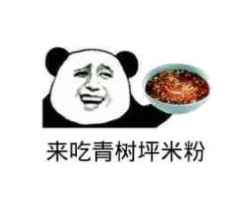

正宗青树坪米粉


吃米粉就要吃青树坪米粉，做早餐，午餐，夜宵都是你极佳的选择。还有什么比来一碗青树坪米粉更带劲的事呢，是兄弟就来干了这碗青树坪米粉。
青树坪米粉的特色
青树坪米粉也颇为独特。米粉作为经典米制品之一，大多具有柔、绵、粘、糯等特点，口感较软;而青树坪米粉相比于普通米粉，口感韧劲更足，粉条本身更具有弹性。它粉条纤细而质地紧密、韧性十足，吃起来分外爽口。轻轻一吸，顺滑的米粉便涌入你的口腔，牙齿微微一抿米粉便齐齐断开，Q弹的米粉在口腔内翻滚、拉扯，颇有异趣。 质地优异的米粉需要优异“配角”的衬托才能更加出彩，但一碗合格的青树坪米粉除了本地的米粉条外，浓郁鲜香的汤头、辣而不燥的辣椒油、酥香紧致的肉片。才构成一碗色香味俱全的青树坪米粉
了解更多产品信息点我